All users: first time setup
R, RStudio, and required packages
To get a copy of R, visit the Comprehensive R Archive Network (CRAN) and choose the right download link for your operating system.
The PMA Data Hub is organized as an RStudio Project, so you’ll also need to use RStudio (not base R).
Note: a copy of RStudio running R version 4.0.2 (or higher) lives on the MPC gp1 server here. Members of the MPC GitHub organization can access an article specifically about using RStudio on gp1 (e.g. how to build a package library) here.
When you’ve got RStudio set up, install these packages:
install.packages("rmarkdown")
install.packages("knitr")
install.packages("distill")
install.packages("usethis")
Troubleshooting note: the package rmarkdown comes along with RStudio, but you may receive an older version than we need to build the site. So, when you try install.packages("rmarkdown"), you may get a message asking to restart R (avoiding a conflict with the prior version). We’ve found that it’s best to reply ‘No’ to the restart prompt, wait for rmarkdown to install, and then re-launch RStudio. If you do choose to restart, you may experience a recursive loop of restart prompts!
Initialize your UMN GitHub account
Contributors to the PMA Data Hub will work on an internal copy of the public site - it’s visible only to certain people affiliated with the MPC. A smaller team of Data Hub “admin” (currently Matt & Nina) will take care of migrating content from the private site to our public site: we’re always here to help with formatting, editing, and version control!
So what is UMN GitHub? GitHub, itself, is a company that hosts projects on proprietary server: when you make a repository “public”, anyone in the world can visit your project on a GitHub server. GitHub also makes its underlying software available to institutions that want to provide a similar service restricted to institutional members. In practice, UMN operates its own GitHub server where organizations like the MPC can host projects that are more private in scope.
UMN GitHub is an instance of Enterprise GitHub, whereas the public version of our blog lives in a space that folks sometimes call “public GitHub”. It’s common for people to have one account for “public GitHub” and one account for their job associated with an “enterprise GitHub”. To initialize an account for UMN GitHub, visit github.umn.edu and log in with your University Internet ID and password.
Using UMN GitHub from RStudio
First things first: you must install install Git on your computer if it isn’t there already. Mac OS comes with git installed,1 while other users should download the right Git for their operation system. If you’re using RStudio on the gp1 server, Git is already installed.
Next, open the Global Options menu in RStudio and locate the Git/SVN tab. Ensure that the box shown below is checked, and then enter the location of the executable file2 for your Git installation:

Lastly, you should provide Git with a username, email, and Personal Access Token (PAT) for your UMN GitHub account. If you’ve installed usethis as shown above, you’ll be able to set these up with R commands (changes will be applied to globally wherever you use Git on your operating system). First, set the username and email address for your UMN GitHub account. For example, mine are:
gert::git_config_global_set("user.name", "Matt Gunther")
gert::git_config_global_set("user.email", "mgunther@umn.edu")
Then, create a PAT for your account with:
usethis::create_github_token(host = "https://github.umn.edu")
Your browser will open to a webpage. Check all the boxes you see, then click the green Generate Token button. On the next page, notice the very long string shown in the green box: this is your PAT. Don’t close this page yet!. Return to R and call:
gitcreds::gitcreds_set("https://github.umn.edu")
You’ll be asked to enter a new password or token: copy and paste your PAT from your browser and press Enter. From now on, RStudio and Git will be able to access your UMN GitHub account automatically! (If you have a personal GitHub account at github.com, you could repeat this process substituting https://github.com for https://github.umn.edu, and Git will automatically choose the right credentials based on the repository associated with your project).
The PMA Data Hub Repository
Open RStudio and navigate to File > New Project, then select Version Control:

Choose Git to clone our project from a GitHub repository:

On the next menu page, enter the address for the enterprise repository exactly as shown (do not clone the public repository):
https://github.umn.edu/mpc/pma-data-hub/Also enter the project directory name “pma-data-hub” as shown:
pma-data-hubIn the third field, choose a location where you would like to save this file on your computer (mine was “~/R” - insert your own path, instead). Finally, click Create Project.
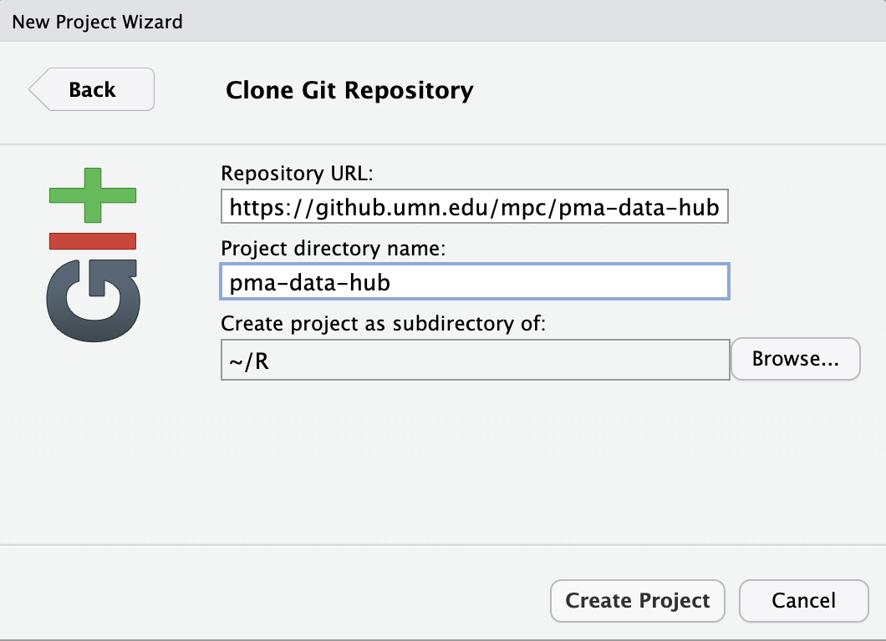
If you have not configured Git to automatically use your UMN GitHub credentials with the steps shown above, you may be prompted to provide them in a pop-up window:
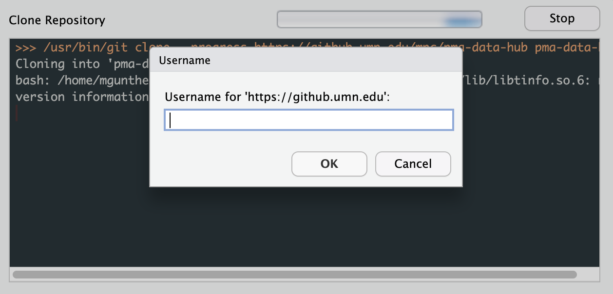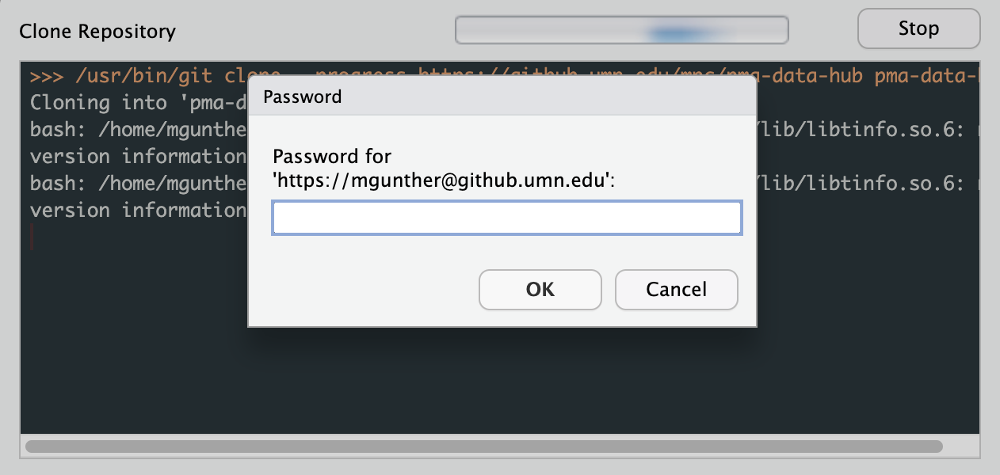
After a short bit, RStudio will relaunch and open the new project. If you adjust the windows to show the tabs Git (left) and Files (right), you should see something like this:
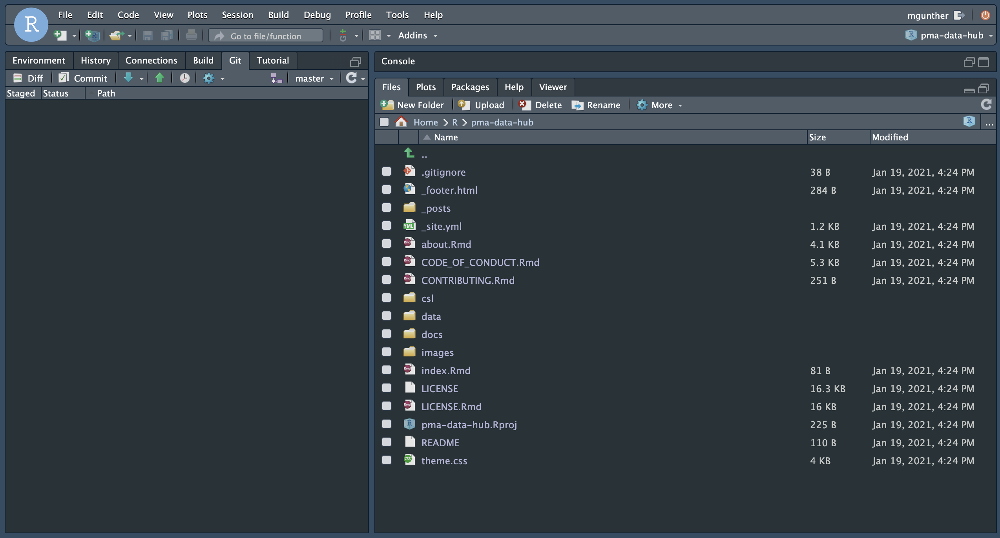
You have now downloaded a copy of the Enterprise repository to your computer!
Moreover, because you’ve connected these files to a GitHub repository, the RStudio Project will now keep track of changes you make to the files in this folder, and it will prompt you to upload your changes back to GitHub: as you add, edit, or delete files, a list of changes will appear in the Git tab.
Notice the word master shown in the Git tab - this shows that any changes we make to files will be recorded in our local copy of the “master” version of the repository. If we made changes here and then pushed them to GitHub, they would be reflected on the “master” version we’ve saved there, too.
In general, Matt and Nina will be responsible for merging finished blog posts to the master branch and deploying its contents to the “live” blog that’s seen by users (for details, see site admin instructions below). All other contributors should create their own branch when writing a new blog post; Matt or Nina will merge them to “master” after they’ve been reviewed and approved by an editor. Read on!
Authors: Creating a new post
Create a new branch
Notice that the Git tab in RStudio has a purple icon:
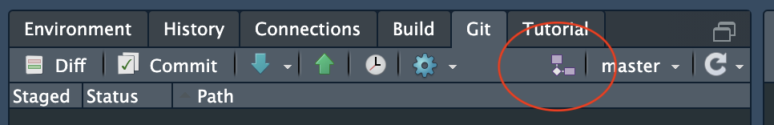
Click this icon to create a new branch. You can name it anything you like, but we recommend using your URL slug if possible (e.g. “blog-post-workflow” is the end of the URL for this webpage). Leave the box next to “Sync branch with remote” checked, as this will create your branch both locally and on our GitHub page:

RStudio now displays the new branch in place of “master” to show that we’re working on the new branch, instead!
Create a new folder in "_posts"
Now that you’ve created a new branch in the Git window, take a look at the File window.
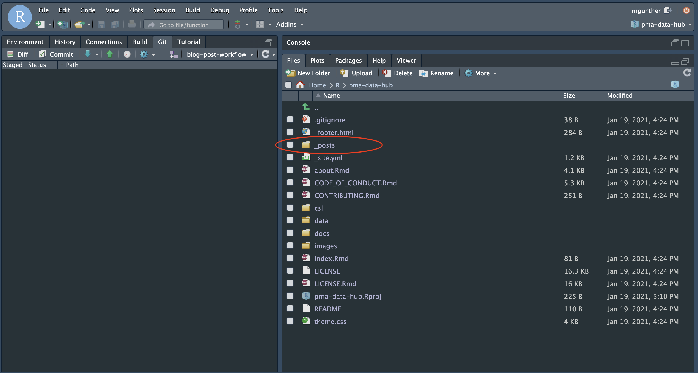
The program we use to build the blog is called Distill, and it takes care of all the back-end work as long as we put every new blog post inside of a unique folder within the "_posts" directory. Opening "_posts", you can see that every post is contained within a time-stamped subfolder:
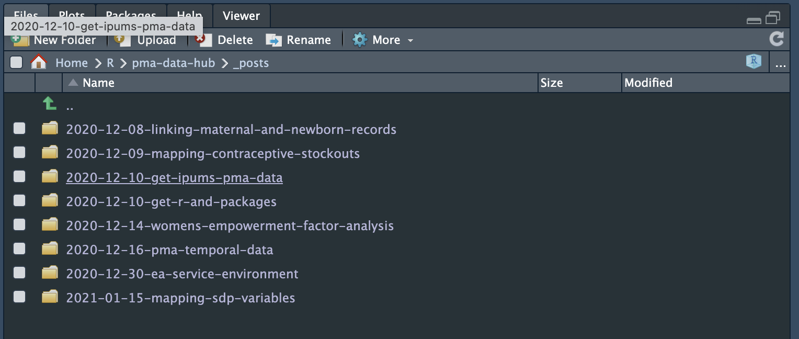
To create one of these folders for your new post, enter the following command into R:
distill::create_post("Blog post workflow")
This does two things: it creates the folder automatically (circled in red), and it opens a new RMarkdown file where you can begin writing your post (circled in green).
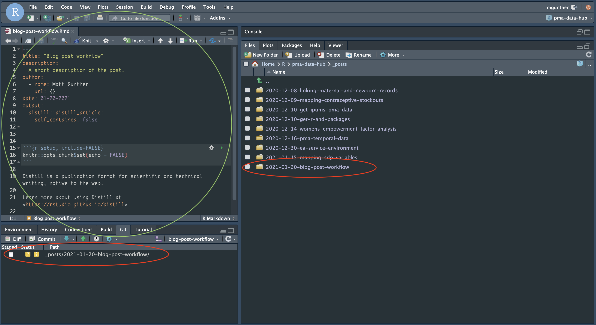
Check out our Quick-start Guide for Blogging with RMarkdown!
As you’re writing your post, you can preview it as a fully formatted webpage by hitting the Knit button at the top of your RMarkdown file:
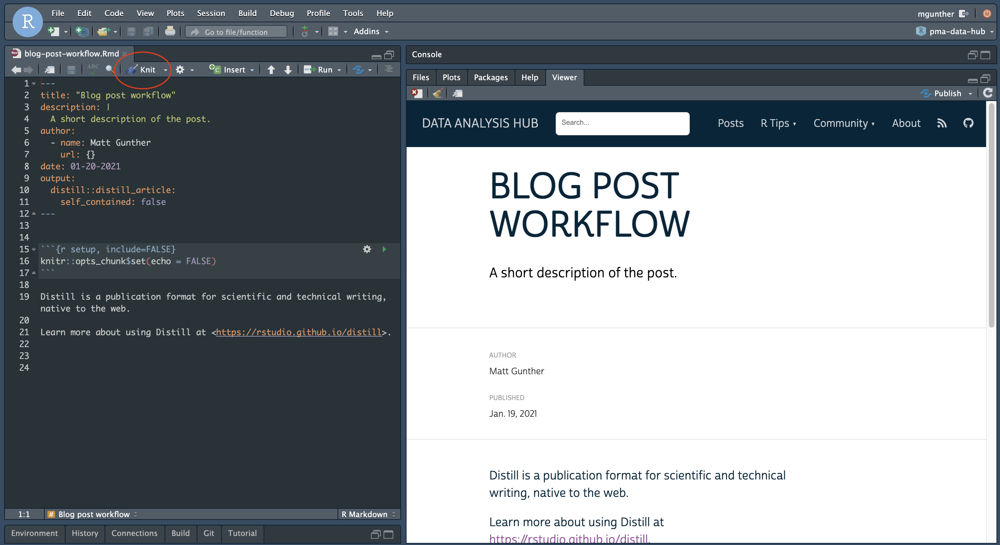
Push your post to GitHub
When you’re finished writing, follow these steps to share your post with the team on our Enterprise GitHub page (reminder: it won’t go “live” until Matt or Nina merges your post to master and publishes it to the public GitHub page).
Press the “Knit” button one more time to render a final HTML version of the page. (At this point, you may see a number of automatically created files related to your RMarkdown file in the Git tab.)
Now, enter the following commands directly into the R console, but please adjust the brief commit “message” as necessary to describe your change!
gert::git_add(".")
gert::git_commit("Draft published: blog-post-workflow")
gert::git_push()
Now, if you visit our Enterprise GitHub page, your post will appear in a new branch! (It will not yet appear on the copy of the blog we have posted there, which is rendered only from master.)
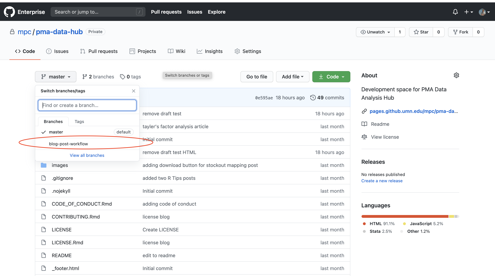
Editors
Pull the author’s branch to your computer
Any time that you want to review an author’s post, you’ll always need to get the latest copy of their branch from our Enterprise GitHub page. If this is the first time you’ve read a draft for the post, the author’s branch won’t yet be listed in RStudio.
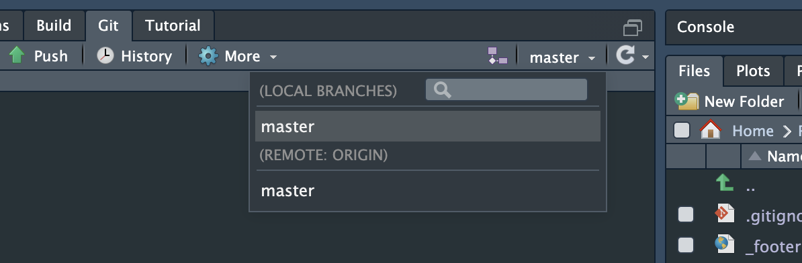
The Pull button in RStudio’s Git tab will gather information about all of the new branches on GitHub, and it will download a copy of each one onto your computer:
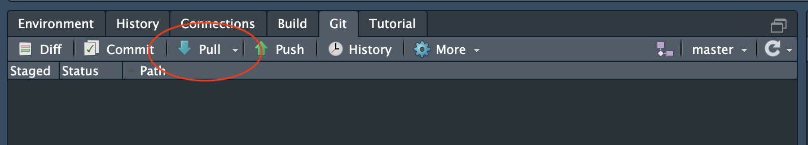
Clicking it will bring up a dialogue screen. RStudio reports that it discovered a new branch blog-post-workflow living at the remote repository origin.
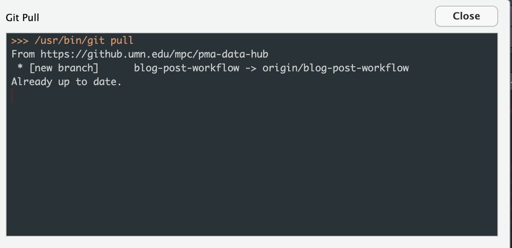
Returning to RStudio’s main window, notice that you can now toggle between the working on the remote master branch, or the new remote branch called blog-post-workflow. When you’re ready to edit the author’s post, use this menu to select their branch.
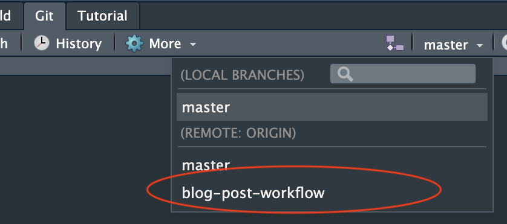
RStudio automatically creates a local version of this branch on your computer, and it reports that your changes will be tracked and pushed to the remote branch of the same name.
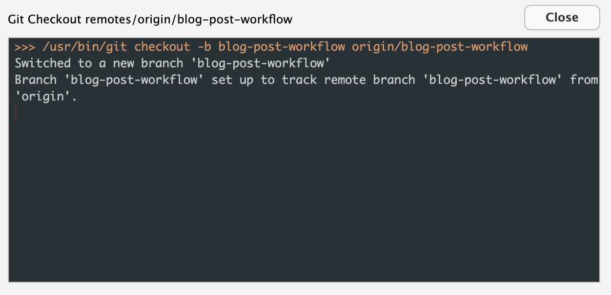
Locate and edit the new post
Now, RStudio shows that you’re working on the author’s branch in the Git tab, and you’ll see their post listed in the _posts folder on the Files tab. Navigate to the .Rmd file for their post, then click it to begin making edits.
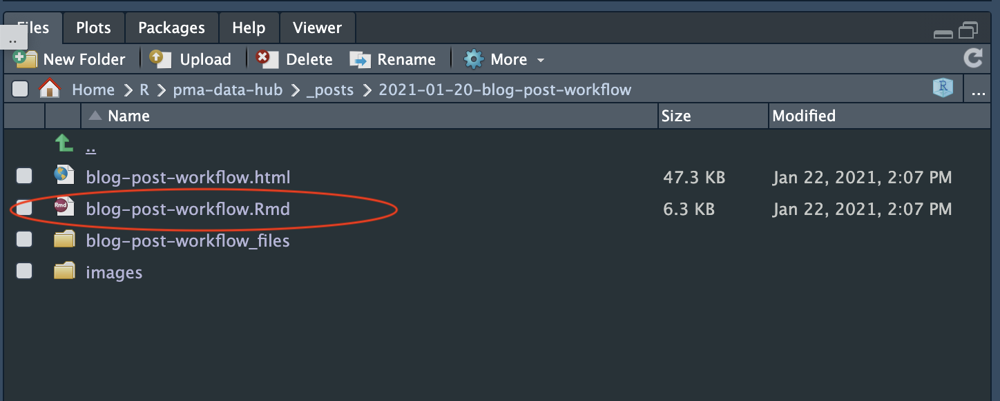
Check out our Quick-start Guide for Blogging with RMarkdown!
As you’re writing your post, you can preview it as a fully formatted webpage by hitting the Knit button at the top of your RMarkdown file:
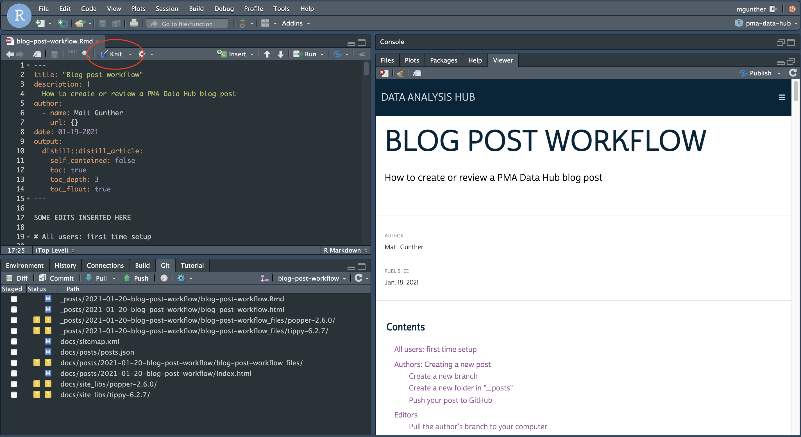
Push the edited post back to GitHub
When you’re finished editing, follow these steps to send the revised file back to GitHub. (Reminder: it won’t appear on the website until Matt or Nina merges the post to master and publishes it to the public GitHub page).
Press the “Knit” button one more time to render a final HTML version of the page. (At this point, you may see a number of automatically created files related to your RMarkdown file in the Git tab.)
Now, enter the following commands directly into the R console, but please adjust the brief commit “message” as necessary to describe your change!
gert::git_add(".")
gert::git_commit("Draft edited: blog-post-workflow")
gert::git_push()
Now, if you visit our Enterprise GitHub page, you’ll see that your edited files appear on the author’s branch. (They will not yet appear on the copy of the blog we have posted there, which is rendered only from master.)
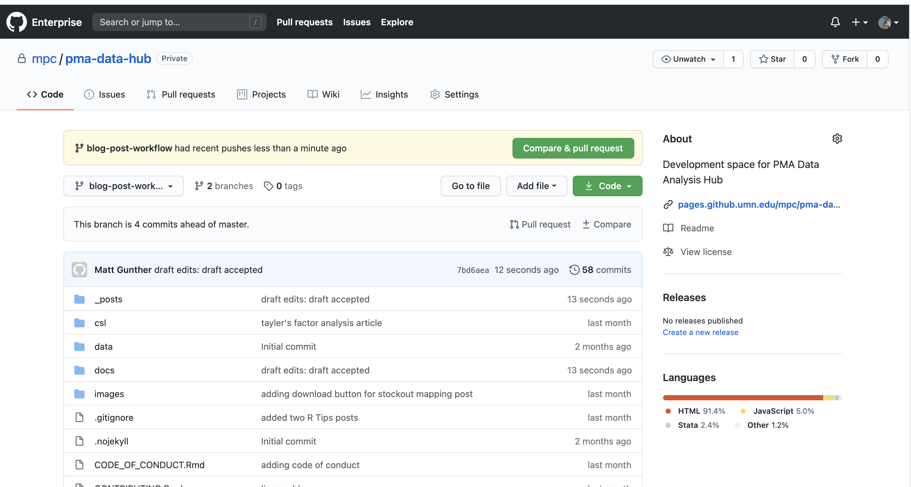
All users: making revisions
When you’ve finished pushing something to GitHub, please email your collaborators to let them know about next steps!
To get your collaborator’s latest updates from GitHub, you should launch the pma-data-hub RStudio project file called pma-data-hub.Rproj. If you forget to open the project file, RStudio will not be able to access the contents of your Git folder (it won’t know that there’s a GitHub repository for the project at all).
When you open the project file, RStudio will again display a Git tab. Click on the Pull button to get your collaborator’s latest changes.
Switch from the master branch to the branch associated with your post:
After you’re finished incorporating their feedback into the RMarkdown file (.Rmd), click Knit and then run these commands in Terminal again to send your work back to GitHub:
gert::git_add(".")
gert::git_commit("Draft complete: blog-post-workflow")
gert::git_push()
Please let Matt & Nina know when your revisions are complete and ready to appear on the live blog!
Site Admin
These instructions will introduce an additional remote to your local repository. Only use them if you’ll be involved with managing updates to the live blog (e.g. Matt & Nina). All of these functions can be used the in RStudio Terminal.
Setup
Before adding a second remote, it’s best to rename the UMN GitHub remote something like private. You can check the current name with:
git remoteIf the UMN GitHub is still called origin (by default), rename it with:
git remote rename origin privateLikewise, you should give the private branch master a different name, as the second remote will have a master branch, too. To see all of the remote branches currently in use:
git remote show privateCheckout master and change its name to something like private-master:
git checkout master
git branch -m "private-master"Now, add the public remote and fetch its branches (there should only be one, called master):
git remote add public https://github.com/ipums/pma-data-hub
git fetch publicCreate a local branch called public-master corresponding with master on the public remote:
git branch public-master public/masterAt this point, you’ll notice that RStudio shows two remotes (with the branches you’ve fetched) and all of the local branches you’ve created so far.
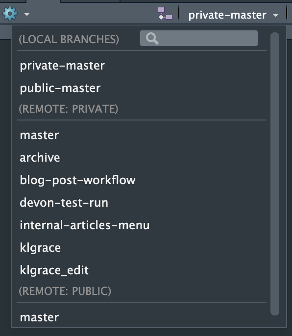
Merging
Our main goal is to avoid creating divergent commit histories between the internal repository and the public repository. In practice, that means a typical workflow will involve these steps:
- Squash and Merge the author’s branch to private/master
- Add the new post to index.Rmd
- Build, Commit, and Push to private/master
- Merge private/master to public/master
- Push to public/master
Our authoring / editing workflow generates a commit each time someone adds a change to the branch git log (you can run git log on any branch to see its full commit history). We will squash and merge this commit history into a single commit on private-master.
For example, with a new post on the branch blog-post-workflow:
git checkout private-master
git merge --squash blog-post-workflowWe have two posts that should not be included in the blog index: this one, and the Quick-start Guide for Blogging with RMarkdown. In order to make that work, we have to whitelist the posts we do want in the file index.Rmd.3
Now, in RStudio, hit the Build Website button. Look over the site to make sure everything looks good. (We won’t build on public-master to avoid merge conflicts, so get those edits in now.)

When you’re ready, add all files and commit your changes with a message like:
git add .
git commit -m "new post: blog-post-workflow"Although your local branch has a different name, you can push your commit to master on the private remote with this command:
git push private HEAD:masterWait a few minutes, and you’ll see that the GitHub Pages site hosted at UMN GitHub should update to reflect your changes.
To merge your private-master to public-master:
git checkout public-master
git merge private-masterFinally, push your changes to the live site:
git push public HEAD:masterOther tips
Need to rollback to a previous commit? Look for it in the git log, and do a hard reset:
git log
git reset --hard 58ba4f0396b985fb5ab82c88f7bbc5c9cc619e71For a checklist of updated files and their commit status:
git statusYou can check its location by running “which git” in Terminal, and “git –version” to check the installed version. If git is somehow not installed, use the “Install git using Homebrew” instructions here↩︎
Mac users: type “which git” in terminal and enter the result; Windows users: look for git.exe (most likely in Program Files)↩︎
Annoying, yes? Hopefully, an exclusion logic will become available in the next
distllrelease.↩︎